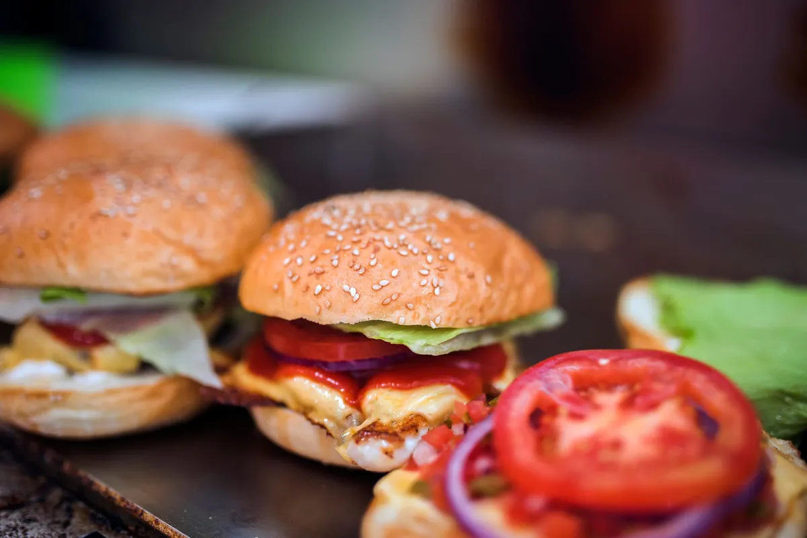

Cardápio digital para pizzaria: como montar sabores, meio a meio e borda

Pizzaria é o delivery com o cardápio mais complexo: tamanho, meio a meio, borda, adicionais e bebida no combo. Um cardápio digital para pizzaria bem montado reduz erro de pedido e aumenta o ticket médio.
1. Comece pelos tamanhos
Broto, média, grande e família. Cada tamanho é uma variação de preço do mesmo sabor — nunca produtos separados, senão o cardápio vira uma lista infinita.
2. Configure o meio a meio corretamente
Defina a regra de preço: maior valor entre os dois sabores (padrão do mercado) ou média. Deixe claro no cardápio qual regra você usa — isso evita discussão no WhatsApp depois.
3. Borda e adicionais como opcionais pagos
Borda de catupiry, cheddar, chocolate; adicional de bacon, azeitona, extra de queijo. São opcionais com preço, e é onde o ticket sobe sem esforço de venda.
4. Combos que vendem sozinhos
Pizza grande + refrigerante 2L é o combo clássico. Coloque em destaque no topo — a maioria dos pedidos de fim de semana sai daí.
5. Tempo de preparo e taxa por bairro
Pizza tem forno com fila. Informe o tempo real de entrega no fim de semana e configure a taxa de entrega por bairro para não pagar corrida longa do próprio bolso.
6. Fuja da comissão por pedido
Pizzaria tem ticket alto — e comissão percentual dói mais em ticket alto. Em um pedido de R$90, 18% são R$16,20 por pizza vendida. Com um plano fixo de R$67/mês, esse valor fica no seu caixa. Veja como fica o cardápio digital para pizzaria com meio a meio e borda já configurados. Veja também o passo a passo para hamburgueria, que vale para qualquer delivery.
7. Divulgue com QR Code na caixa
Cole um QR Code do seu cardápio na própria caixa da pizza: quem já provou pede direto na próxima vez. Veja como criar o QR Code do seu cardápio.
Pare de pagar comissão por pedido
Tenha seu cardápio digital próprio por R$67/mês fixo. Nós configuramos pra você e damos todo o suporte técnico.
Criar Meu Cardápio Agora →